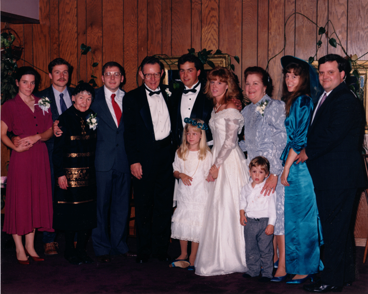

Here's a photograph of Lena Anne nee Wyss Rudge's family taken on 22 Sep 1990. The participants in this photograph are, left to right: (backrow) Patricia Anne nee DUFF RUDGE, her husband William Jerome RUDGE IV, Lena Anne nee WYSS RUDGE, her grandson David Wyss RUDGE, William Jerome RUDGE III, James William CORNEY and his bride Susan Elizabeth nee RUDGE CORNEY, Beverly Anne nee COOK RUDGE, Laura Anne nee RUDGE WOLFE, her husband, Daniel James WOLFE Jr. (front) Stephanie Alyssa WOLFE and Eric Alexander WOLFE.